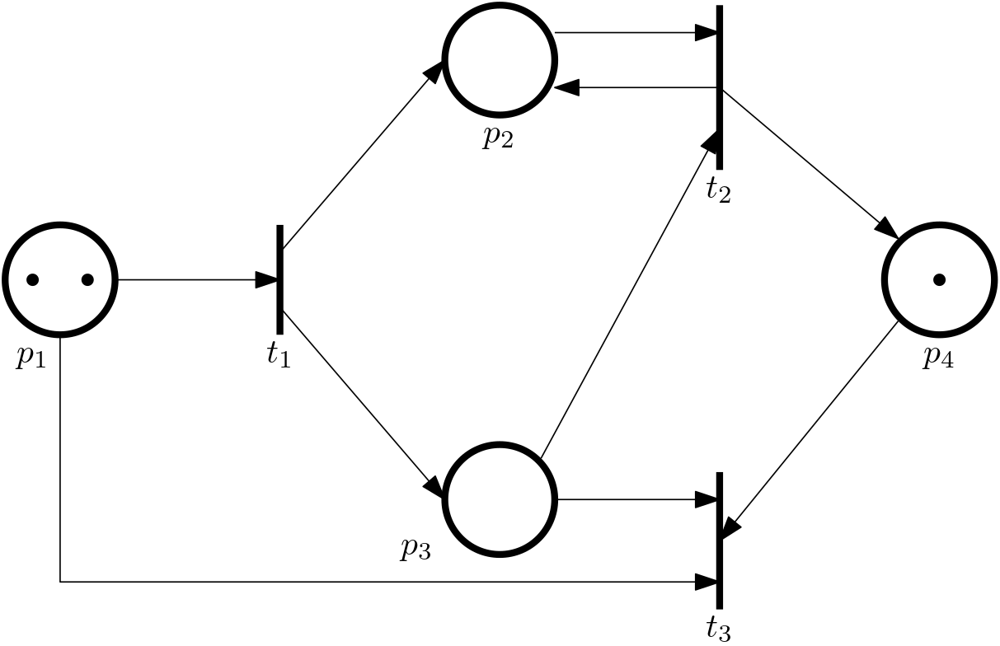
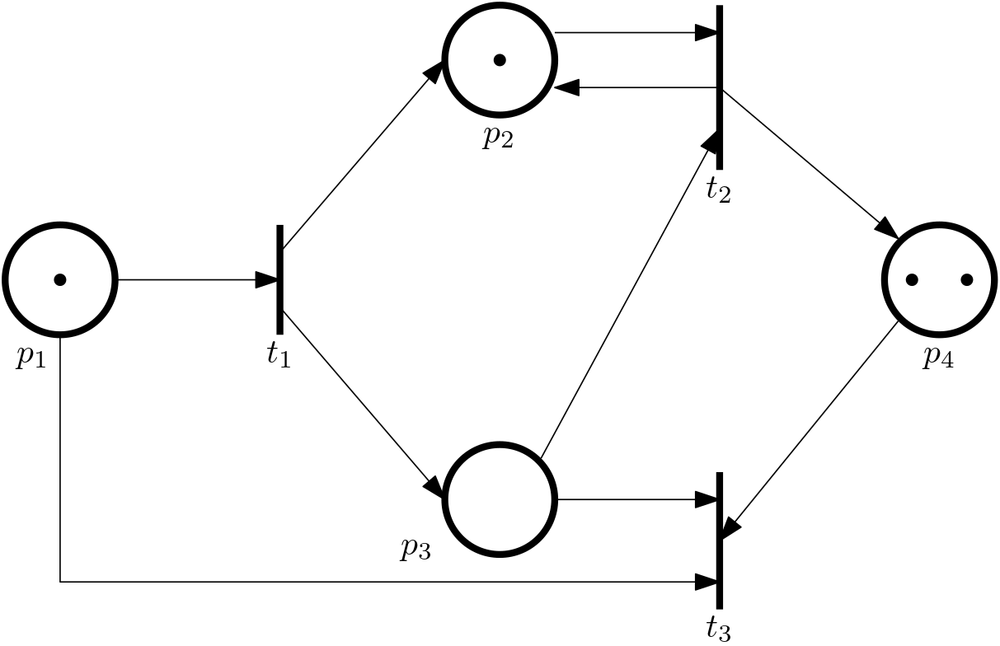
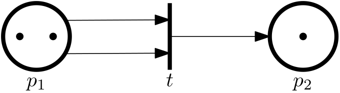
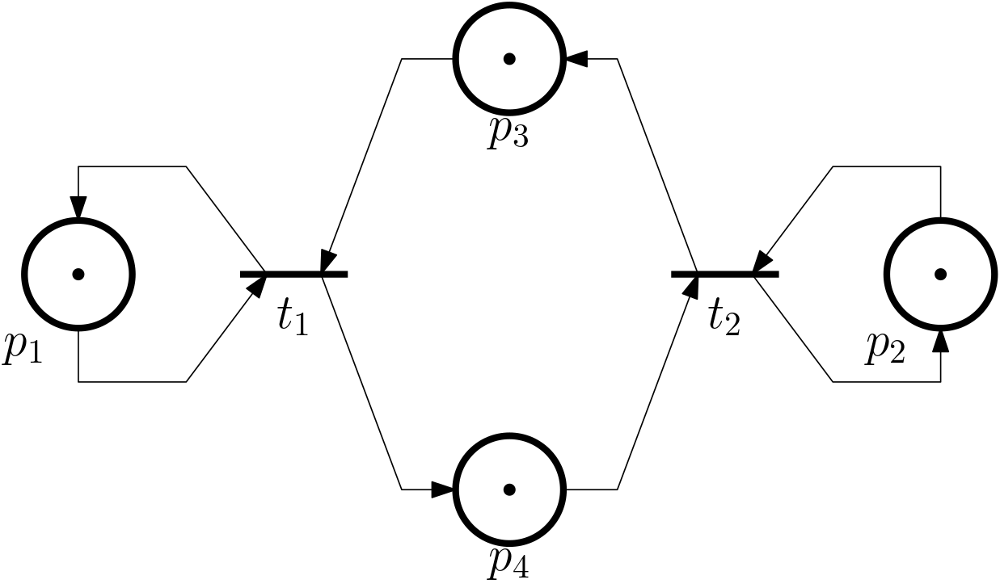
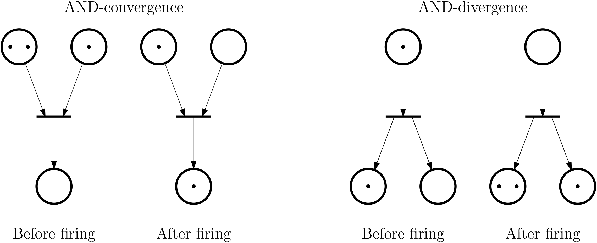
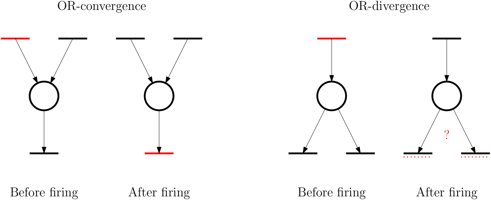
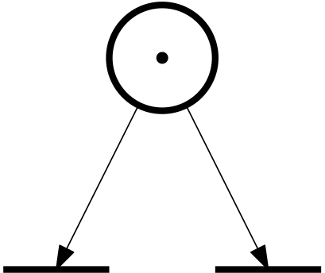
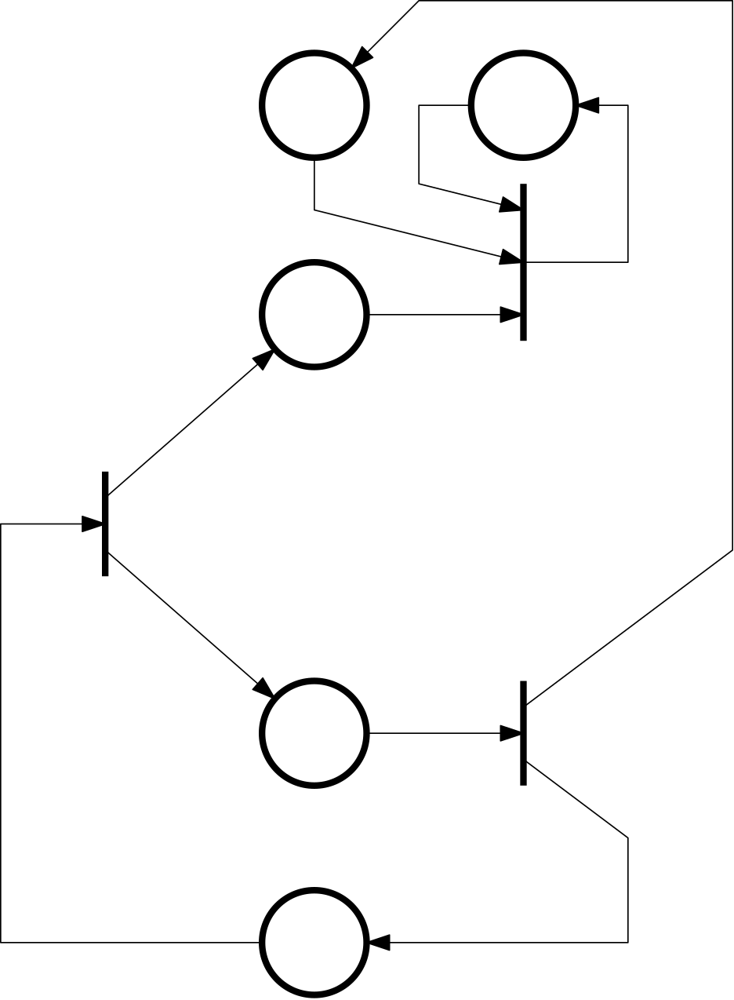
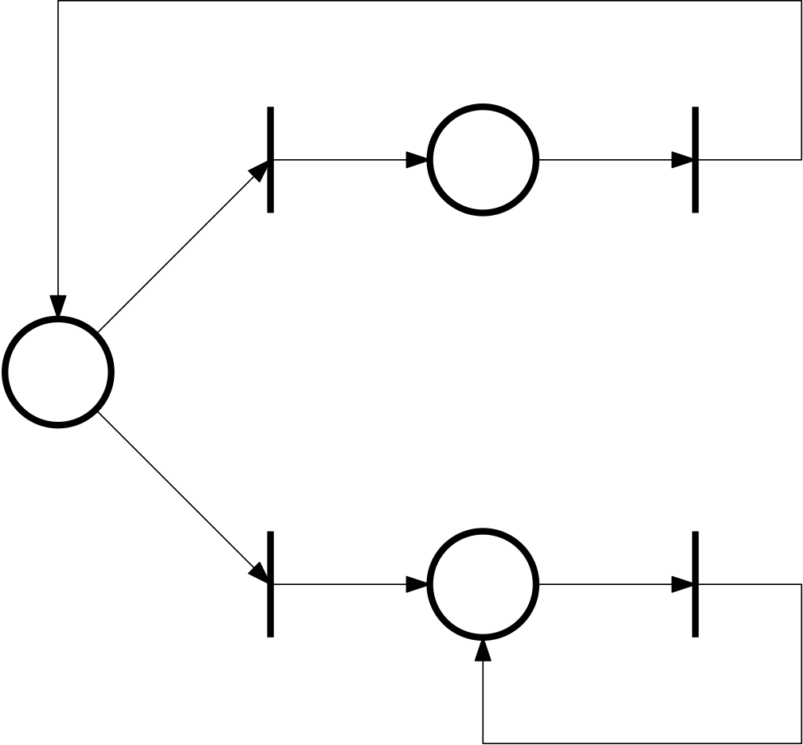
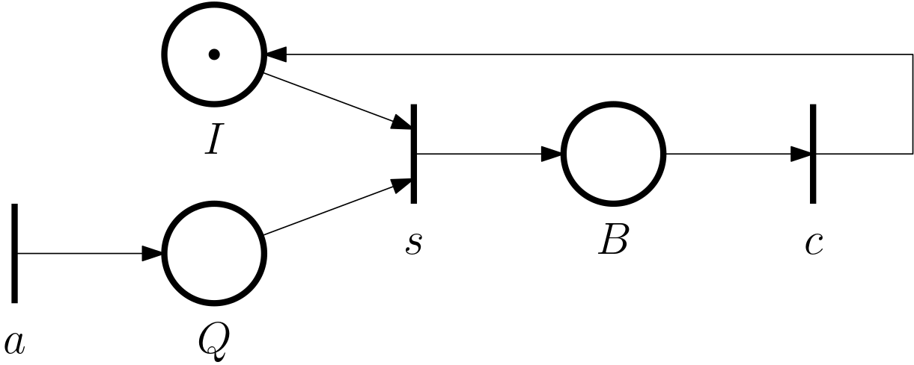

Petri nets
In this chapter we introduce another formalism for modelling discrete event systems (DES) – Petri nets. Petri nets offer an alternative perspective on discrete even systems compared to automata. And it is good to have alternatives, isn’t it? For some purposes, one framework can be more appropriate than the other.
For example, a finite Petri net can model even an infinite state automaton.
This particular tip should be inserted later in the text and not here in this general intro.
Furthermore, the ideas behind Petri nets even made it into international standards. Either directly or through the derived GRAFCET language, which in turn served as the basis for the Sequential Function Chart (SFC) language for PLC programming. See the references.
Last but not least, an elegant algebraic framework based on the so-called (max,+) algebra has been developed for a subset of Petri nets (so-called event graphs) and it would be a shame not to mention it in our course (in the next chapter).
Definition of a Petri net
Similiarly as in the case of automata, a Petri net (PN) can be defined as a tuple of sets and functions: \boxed{PN = \{\mathcal{P}, \mathcal{T}, \mathcal{A}, w\},} where
- \mathcal{P} = \{p_1, \dots, p_n\} is a finite set of places,
- \mathcal{T} = \{t_1, \dots, t_m\} is a finite set of transitions,
- \mathcal{A} \subseteq (\mathcal{P} \times \mathcal{T}) \cup (\mathcal{T} \times \mathcal{P}) is a finite set of arcs, and these arcs are directed and since there are two types of nodes, there are also two types of arcs:
- (p_i, t_j) \in \mathcal{A} is from place p_i to transition t_j,
- (t_j, p_i) \in \mathcal{A} is from transition t_j to place p_i,
- w : \mathcal{A} \to \mathbb{N} is a weight function.
Similarly as in the case of automata, Petri nets can be visualized using graphs. But this time, we need to invoke the concept of a weighted bipartite graph. That is, a graph with two types of nodes:
- places = circles,
- transitions = bars.
The nodes of different kinds are connected by arcs (arrowed curves). A integer weights are associated with arcs. Alternatively, for a smaller weight (2, 3, 4), the weithg can be graphically encoded by drawing multiple arcs.
Example 1 (Simple Petri net) We consider just two places, that is, \mathcal{P} = \{p_1, p_2\}, and one transition, that is, \mathcal{T} = \{t\}. The set of arcs is \mathcal{A} = \{\underbrace{(p_1, t)}_{a_1}, \underbrace{(t, p_2)}_{a_2}\}, and the associated weights are w(a_1) = w((p_1, t)) = 2 and w(a_2) = w((t, p_2)) = 1. The Petri net is depicted in Figure 1.
Additional definitions
- \mathcal{I}(t_j) … a set of input places of the transition t_j,
- \mathcal{O}(t_j) … a set of output places of the transition t_j.
Example 2 (More complex Petri net)
- \mathcal{P} = \{p_1, p_2, p_3, p_4\},
- \mathcal{T} = \{t_1, t_2, t_3, t_4, t_5\},
- \mathcal{A} = \{(p_1, t_1), (t_1, p_1), (p_1, t_2),\ldots\},
- w((p_1, t_1)) = 2, \; w((t_1, p_1)) = 1, \; \ldots
Marking and marked Petri nets
An important concept that we must introduce now is that of marking. It is a function that assigns an integer to each place x: \mathcal{P} \rightarrow \mathbb{N}.
The vector composed of the values of the marking function for all places \bm x = \begin{bmatrix}x(p_1)\\ x(p_2)\\ \vdots \\ x(p_n) \end{bmatrix} can be viewed as the state vector (although the Petri nets community perhaps would not use this terminology and stick to just marking).
Marked Petri net is then a Petri net augmented with the marking
MPN = \{\mathcal{P}, \mathcal{T}, \mathcal{A}, w,x\}.
Visualization of marked Petri net using tokens
Marked Petri net can also be visualized by placing tokens (dots) into the places. The number of tokens in a place corresponds to the value of the marking function for that place.
Example 3 (Marked Petri net) Consider the Petri net from Example 1. The marking function is x(p_1) = 2 and x(p_2) = 1, which assembled into a vector gives \bm x = \begin{bmatrix}1\\ 0 \end{bmatrix}. The marked Petri net is depicted in Figure 3.
For another marking, namely \bm x = \begin{bmatrix}2\\ 1 \end{bmatrix}, the marked Petri net is depicted in Figure 4.
Enabling and firing of a transition
Finally, here comes the enabling (pun intended) component of the definition of a Petri net – enabled transition. A transition t_j does not just happen – we say fire – whenever it wants, it can only happen (fire) if it is enabled, and the marking is used to determined if it is enabled. Namely, the transition is enabled if the value of the marking function for each input place is greater than or equal to the weight of the arc from that place to the transition. That is, the transition t_j is enabled if x(p_i) \geq w(p_i,t_j)\quad \forall p_i \in \mathcal{I}(t_j).
The enabled transition can fire, but it doesn’t have to. We will exploit this in timed PN.
Example 4 (Enabled transition) See the PN in Example 3: in the first marked PN the transition cannot fire, in the second it can.
State transition function
We now have a Petri net as a conceptual model with a graphical representation. But in order to use it for some quantitative analysis, it is useful to turn it into some computational form. Preferrably a familiar one. This is done by defining a state transition function. For a Petri net with n places, the state transition function is f: \mathbb N^n \times \mathcal{T} \rightarrow \mathbb N^n, which reads that the state transition fuction assignes a new marking (state) to the Petri net after a transition is fired at some given marking (state).
The function is only defined for a transition t_j iff the transition is enabled.
If the transition t_j is enabled and fired, the state evolves as \bm x^+ = f(\bm x, t_j), where the individual components of \bm x evolve according to \boxed{ x^+(p_i) = x(p_i) - w(p_i,t_j) + w(t_j,p_i), \; i = 1,\ldots,n.}
This has a visual interpretation – a fired transition moves tokens from the input to the output places.
Example 5 (Moving tokens around) Consider the PN with the initial marking (state) \bm x_0 = \begin{bmatrix}2\\ 0\\ 0\\ 1 \end{bmatrix} (at discrete time 0), and the transition t_1 enabled

We admit the notation here is confusing, because we use the lower index 0 in \bm x_0 to denote the discrete time, while the lower index 1 in t_1 to denote the transition and the lower indices 1 and 2 in p_1 and p_2 just number the transitions and places, respectively. We could have chosen something like \bm x(0) or \bm x[0], but we dare to hope that the context will make it clear.
Now we assume that t_1 is fired
The state vector changes to \bm x_1 = [1, 1, 1, 1]^\top, the discrete time is 1 now.
As a result of this transition, note that t_1, t_2, t_3 are now enabled.
In the example we can see for the first time, that the number of tokens need not be preserved.
Now fire the t_2 transition

The state vector changes to \bm x_2 = [1, 1, 0, 2]^\top, the discrete time is 2 now.
Good, we can see the idea. But now we go back to time 1 (as in Figure 5) to explore the alternative evolution. With the state vector \bm x_1 = [1, 1, 1, 1]^\top and the transitions t_1, t_2, t_3 enabled, we fire t_3 this time.
The state changes to \bm x_2 = [0, 1, 0, 0]^\top, the discrete time is 2. Apparently the PN evolved into at a different state. The lesson learnt with this example is that the order of firing of enabled transitions matters.
The dependence of the state evolution upon the order of firing the transitions is not surprising. Wwe have already encountered it in automata when the active event set for a given state contains more then a single element.
Reachability
We have started talking about states and state transitions in Petri nets, which are all concepts that we are familiar with from dynamical systems. Another such concept is reachability. We explain it through an example.
Example 6 (Not all states are reachable)

The Petri net is initial in the state [2,1]^\top. The only reachable state is [0,2]^\top.
By the way, note that the weight of the arc from the place p_1 to the transition t is 2, so both tokens are removed from the place p_1 when the transition t fires. But then the arc to the place p_2 has weight 1, so only one token is added to the place p_2. The other token is “lost”.
Reachability tree and graph
Here we introduce two tools for analysis of reachability of a Petri net.
Example 7 Consider the following example of a Petri net.

In Figure 6 we draw a reachability tree for this Petri net.
In Figure 7 we draw a reachability graph for this Petri net.
Number of tokens need not be preserved
We have already commented on this before, but we emphasize it here. Indeed, it can be that \sum_{p_i\in\mathcal{O}(t_j)}w(t_j,p_i) < \sum_{p_i\in\mathcal{I}(t_j)} w(p_i,t_j)
or
\sum_{p_i\in\mathcal{O}(t_j)}w(t_j,p_i) > \sum_{p_i\in\mathcal{I}(t_j)} w(p_i,t_j)
With this reminder, we can now hightlight several patters that can be observed in Petri nets.
AND-convergence, AND-divergence

OR-convergence and OR-divergence

Nondeterminism in a PN
In the four patters just enumerated, we have seen that the last one – the OR-divergence – is not deterministic. Indeed, consider the following example.
Example 8

In other words, we can incorporate a nondeterminism in a model.
Recall that something similar can be encountered in automata, if the active event set for a given state contains more than one element (event,transition).
Subclasses of Petri nets
We can identify two subclasses of Petri nets:
- event graphs,
- state machines.
Event graph
- Each place has just one input and one output transition (all ws equal to 1).
- No OR-convergence, no OR-divergence.
- Also known as Decision-free PN.
- It can model synchronization.
Example 9 (Event graph)

State machine
- Each transition has just one input and one output place.
- No AND-convergence, no AND-divergence.
- Does not model synchronization.
- It can model race conditions.
- With no source (input) and sink (output) transitions, the number of tokens is preserved.
Example 10 (State machine)

Incidence matrix
We consider a Petri net with n places and m transitions. The incidence matrix is defined as \bm A \in \mathbb{Z}^{n\times m}, where a_{ij} = w(t_j,p_i) - w(p_i,t_j).
Some define the incidence matrix as the transpose of our definition.
State equation for a Petri net
With the incidence matrix defined above, the state equation for a Petri net can be written as \bm x^+ = \bm x + \bm A \bm u, where \bm u is a firing vector for the enabled j-th transition \bm u = \bm e_j = \begin{bmatrix}0 \\ \vdots \\ 0 \\ 1\\ 0\\ \vdots\\ 0\end{bmatrix} with the 1 at the j-th position.
Note that in [1] they define everything in terms of the transposed quantities, but we prefer sticking to the notion of a state vector as a column.
Example 11 (State equation for a Petri net) Consider the Petri net from Example 5, which we show again below in Figure 8.
The initial state is given by the vector \bm x_0 = \begin{bmatrix} 2\\ 0\\ 0\\ 1 \end{bmatrix}
The incidence matrix is \bm A = \begin{bmatrix} -1 & 0 & -1\\ 1 & 0 & 0\\ 1 & -1 & -1\\ 0 & 1 & -1 \end{bmatrix}
And the state vector evolves according to \begin{aligned} \bm x_1 &= \bm x_0 + \bm A \bm u_1\\ \bm x_2 &= \bm x_1 + \bm A \bm u_2\\ \vdots & \end{aligned}
We repeat once again just to make sure: the lower index corresponds to the discrete time.
Queueing systems modelled by PN
Although Petri nets can be used to model a vast variety of systems, below we single out one particular class of systems that can be modelled by Petri nets – queueing systems. The general symbol is shown in Figure 9.
We can associate the transitions with the events in the queing system:
- a is a spontaneous transition (no input places).
- s needs a customer in the queue and the server being idle.
- c needs the server being busy.
We can now start drawing the Petri net by drawin the bars corresponding to the transitions. Then in between every two bars, we draw a circle for a place. The places can be associated with three bold-face letters above, namely:
\quad \mathcal{P} = \{Q, I, B\}, that is, queue, idle, busy.

The transition a is an input transition – the tokens are added to the system through this transition.
Note how we consider the token in the I place. This is not only to express that the server is initially idle, ready to serve as soon as a customer arrives to the queue, it also ensures that no serving of a new customer can start before the serving of the current customer is completed.
The initial state: [0,1,0]^\top. Consider now a particular trace (of transitions/events) \{a,s,a,a,c,s,a\}. Verify that this leads to the final state [2,0,1]^\top.
Some more extensions
We can keep adding features to the model of a queing system. In particular,
- the arrival transition always enabled,
- the server can break down, and then be repaired,
- completing the service \neq customer departure.
These are incorporated into the Petri net in Figure 10.
In the Petri net, d is an output transition – the tokens are removed from the system.
Example 12 (Beverage vending machine) Below we show a Petri net for a beverage vending machine. While building it, we find it useful to identify the events/transitions that can happen in the system.
Some extensions of basic Petri nets
- Coloured Petri nets (CPN): tokens can by of several types (colours), and the transitions can be enabled only if the tokens have the right colours.
- …
We do not cover these extensions in our course. But there is one particular extension that we do want to cover, and this amounts to introducing time into Petri nets, leading to timed Petri nets, which we will discuss in the next chapter.